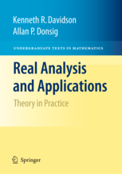

|
Allan Donsig
Professor & Vice Chair
Department of Mathematics
University of Nebraska--Lincoln
Office: Avery 205
Office Phone: 402-472-8128
Dept. Phone: 402-472-3731
Dept. Fax: 402-472-8466
E-mail: adonsig at unl dot edu
(Forgive the non-machine readable address)
Office Hours: 1:30-2:30 Monday, 10:30-11:30 Wednesday, 1:30-2:30 Thursday, or by appointment
To make an appointment outside office hours, please send email or call.
(It is fine to drop by outside office hours, but I may be busy.)
|
All records for my courses are kept on Canvas
If you have questions about a class, please come talk to me or send an email.
- Spring 2019
- Math 310 Introduction to Modern Algebra
- Spring 2018
- Math 314H Linear Algebra (Honors Course)
- Math 107 Calculus II
- Fall 2017
- on sabbatical
- Fall 2016
- Math 425 Mathematical Analysis
- Spring 2016
- Math 415 Theory of Linear Transformations
- Fall 2015
- Math 106-650 Calculus I
- Fall 2014
- Math 923 Topics in Analysis: Operator Algebras
- Spring 2014
- Math 101 College Algebra
- Spring 2013
- Math 104 Business Calculus
- Fall 2012
- Math 811T Functions for High School Teachers
- Spring 2012
- Math 818 Introduction to Modern Algebra II
- Fall 2011
- Math 817 Introduction to Modern Algebra I
- Spring 2011
- Math 433 Nonlinear Optimization
- Fall 2010
- Math 221H Honors: Differential Equations
- Math 221-005 Differential Equations
- Spring 2010
- Math 106-150 Analytic Geometry and Calculus I
Useful webpages for Mathematics Students
Practice isn't the thing you do once you're good. It's the thing you do
that makes you good.---Malcolm Gladwell
- Randy Pausch's Time Management Lecture This is not about math per se, but it will help you find the time to do what you need to do.
-
The Most Common Errors In Undergraduate Mathematics
-
Excerpts from How to Ace Calculus : The Streetwise Guide
- How to Study Math Guide
from the Ohio State University's Math Dept.
- How to Succeed in Math
from Saint Louis University.
- How to succeed in University
Calculus. This page is for students going to universities in atlantic Canada, but the
advice is universal.
- Calculus.org A general resource page for calculus.
-
HOW DO UNDERGRADUATES DO MATHEMATICS? A guide to studying mathematics at Oxford University
Although this study guide is focused on Oxford, much of its advice is relevant (indeed,
crucial) to anyone learning mathematics.
-
A Guide to Writing in Mathematics Classes
- If you ever find yourself preparing an abstract or a summary of your own research,
you should read How to
get your abstract rejected. Heck, read it anyway, it's quite funny and you've probably
seen all of the sins it outlines committed in the course texts you've had to read.
My research interests are in operator algebra and operator theory.
In particular, most of my papers are about limit algebras, infinite-dimensional
operator algebras that are limits of finite-dimensional algebras.
In spite of being "almost finite-dimensional", they have some quite suprising
properties.
I've put more information, including abstracts of my papers, on a separate
page.

Together with Kenneth R. Davidson
of the University of Waterloo, I have written an introductory analysis textbook,
called Real Analysis and Applications.
The publisher, Springer-Verlag New York, has a
webpage for the book.
(This is an updated version of Real Analysis with Real Applications,
published by Prentice-Hall in 2001.)
I've posted
the table of contents and the preface for the book.
There is also a table of errata.
Feel free to email us with comments on the book.
On a related note, I have a short
list of articles and books
that I've found useful in teaching analysis.
These are typesetting programs that are defacto standards for
mathematics and physics papers.
The hardest part of getting started with them is finding
good model documents to modify.
In the absence of better models, I offer a few documents of
my own, listed
here.
There are a multitude of good sites on TeX.
I would particularly recommend the
Comprehensive TeX Archive Network
and the American Mathematical Society's page on
TeX Resources.
There are two books I would particularly recommend:
- LaTeX: A Document Preparation System by Leslie Lamport,
Second Edition, Addison-Wesley, ISBN: 0-201-52983-1.
- A Guide to LaTeX 2e by Helmut Kopka and Patrick W. Daly,
Second Edition, Addison-Wesley, ISBN: 0-201-42777-X.
The first is the original user's manual by the author of LaTeX.
But what matters most to me, personally, is being able to communicate
to others my sense of what mathematical research is all about--the
quest for truth and the inner joy that comes from surrendering oneself
to it.
1
Alain Connes, Fields Medalist in Operator Algebras